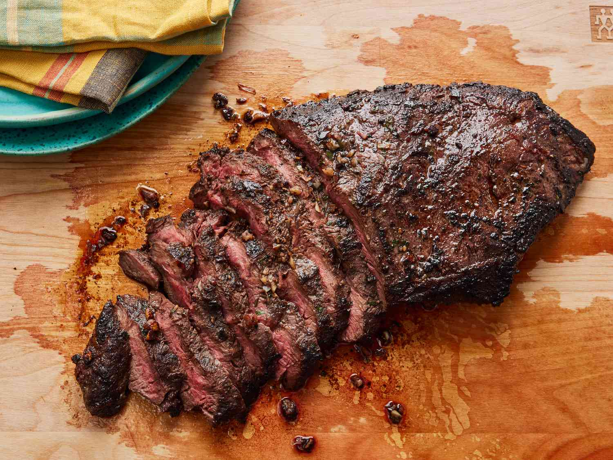

Flat Iron Steak Recipe
Home

Description
Skip the steakhouse and make restaurant-worthy steak at home. Trust us, you're going to want to bookmark this irresistible flat iron steak recipe — you'll come back to it again and again.
Ingredients
- 1 (2 pound) flat iron steak
- 2 and a 1/2 tablespoons olive oil
- 2 cloves garlic, minced
- 1/4 teaspoon chopped fresh rosemary
- 1/4 teaspoon chopped fresh chives
- 1/4 cup Cabernet Sauvignon (or other dry red wine)
- 1/2 teaspoon salt
- 3/4 teaspoon ground black pepper
- 1/4 teaspoon dry mustard powder
Steps
- Place steak inside a large resealable bag. Stir together olive oil, garlic, parsley, rosemary, chives, red wine, salt, pepper, and mustard powder in a small bowl.
- Pour marinade over steak in the bag. Press out as much air as you can and seal the bag. Marinate in the refrigerator for 2 to 3 hours.
- Heat a nonstick skillet over medium-high heat. Sear and cook the steak in the hot skillet for 3 to 4 minutes on each side for medium rare, or to your desired degree of doneness.
- Discard the marinade. Allow the steaks to rest for about 5 minutes before serving.
Back to Top